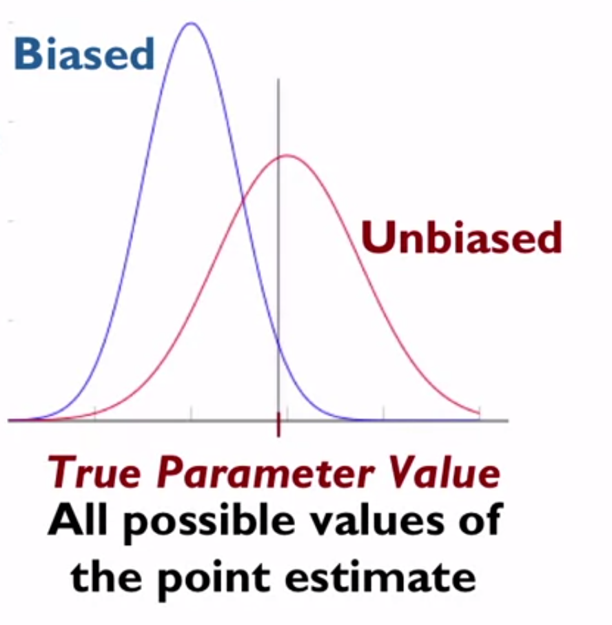
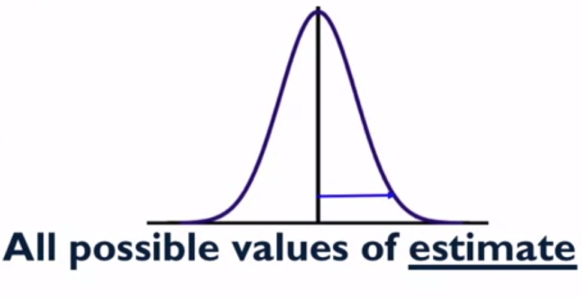

Inference in Practice -- 基于单一样本对一个群体进行推断
Start with Me | Coursera - Understanding and Visualizing Data with Python week 4-7 - Making Population Inference Based on Only One Sample
如何只根据一个样本来对一个群体进行推断？
在实践中不可能去选取成千上万的样本，所以在研究和数据分析中，最终得到的是一个样本，我们要尝试基于这一个样本对一个群体进行推断。
Lecture Overview
General approaches to making population inferences based on estimated features of sampling distributions
Confidence Interval Estimate for Parameters of Interest
Hypothesis Testing about Parameters of Interest
Examples of Parameters of Interest:
a mean, a proportion, a regression coefficient, an odds ratios, and many more !
Key Assumption : Normality
These approaches assume that sampling distributions for the estimate are (approximately) normal, which is often met if sample sizes are "large"
Q：What if sampling distribution is not (approximately) normal ?
A：Alternative inferential approaches discussed in later course
关键假设 : 正态性
在不同大小的样本下，这些分布将趋于变小
我们得到了更精确的估计，但是对于各种相对适度的样本大小，根据中心极限定理，这些分布总会趋于正态
所以，抽样分布是正态的这个假设，如果样本量足够大，往往就会满足
当我们谈论一个抽样分布时，我们谈论的是在假设的重复样本中对一个感兴趣的参数的估计值的所有可能值
如果抽样分布事实上不是近似正态分布，应该怎么做？还能使用这些推断程序，置信区间形成和假设检验吗？
- 后面课程会讨论这些情况下的其他推断方法
- 但是各种常见的报道统计往往遵循正态抽样分布
Step 1 : Compute the Point Estimate
Compute an unbiased point estimate of the parameter of interest
Unbiased Point Estimate :
average of all possible values for point estimate is equal to true parameter value
The sampling distribution is centered at the truth !
Key Idea : want estimate to be unbiased with respect to sample design !
If cases had unequal probabilities of selection, those weights need to be used when computing the point estimate !
第一步 ：计算点估计
点估计，是对整体人群的一个感兴趣参数的估计
先计算一个感兴趣的参数的无偏点估计
无偏点估计
意味着该点估计的所有可能值的平均值
在假设的重复样本上等于真实的参数值
这个平均值也被称为该点估计的期望值
我们期望在假设的重复样本中看到的点估计值是多少？
当我们说一个估计值是无偏的时候，这意味着所有这些假设重复样本的可能值的平均值等于真实参数值

如图所示
直线代表了真实参数值
一个抽样分布会给我们一个无偏的真实人口参数的估计，就是红色的分布
这个分布是以真实参数值为中心的
平均来说，在这些假设的重复样本中产生的估计值会给我们真实的参数值
蓝色的是有偏差的估计值，可以看出这个特定估计值的抽样分布是如何偏离真实参数值的
- 这就意味着有了偏倚抽样
- 平均来说，计算的估计值会远离真实的群体参数
一个无偏的点估计意味着抽样分布是以我们感兴趣的真实人口参数为中心的
平均来说，当我们重复抽取样本时，计算出的那些估计值将等于真实的人口参数
这是为什么设计的样本会给我们提供这些类型的无偏估计如此重要
关键点：
- 希望我们计算的估计值对样本设计是无偏的
- 给定所使用的样本设计，希望计算一个感兴趣的人口参数的估计值，当考虑到收集数据所使用的样本设计特征时，这个估计值是无偏的
- 如果选择概率不平等，就会导致在计算有限种群参数估计时需要使用权重来计算一个无偏的点估计
- 如果样本设计的选择概率不等，没有使用权重，就会改变抽样分布，就像上图蓝色的图形
有了点估计，计算出一个无偏的点估计，如果需要根据样本设计使用权重，会在计算该点估计时使用
Step 2 : Estimate the Sampling Variance of the Point Estimate
Compute an unbiased estimate of the variance of the sampling distribution for the particular point estimate
Unbiased Variance Estimate :
Correctly describes variance of the sampling distrinbution under the sample design used
Square root of variance = Standard Error of the Point Estimate
第二步 ：估计与该点估计相关的抽样方差
要估计该抽样分布的方差
因为没有资源去抽取成千上万的样本，并根据所有这些不同的样本来计算它们的方差，只需要根据一个样本来估计与我们点估计相关的那个抽样方差
和计算感兴趣参数的无偏点估计一样，也要计算这个特定点估计的样本分布的抽样方差的无偏估计
所以想要一个无偏的点估计、一个无偏的抽样方差估计
一个无偏的方差估计正确地描述了使用的样本设计下的抽样分布的方差

如图所示
- 如果绘制所有可能的估计值的假设值，可以看到这个图中的蓝色小箭头
- 这是试图只基于一个样本来估计的变异性
- 一旦有了一个很好的无偏估计的变异性，也就是期望看到的变异性，那么就有了所需要的工具来推断该参数在总体人群中的价值
关键点：
- 试图估计方差的平方根，即点估计的标准误差
- 当估计抽样分布的方差来进行推断的时候，一般会依靠点估计的标准误差
- 标准误差的真正含义？在样本中计算出的不同估计值离真实值有多远？
- 抽样分布的方差 ，取平方根，就得到了一个标准差，所以，标准误差实际上是在描述抽样分布的标准差
To Form a Confidence Interval
Best Estimate ± Margin of Error
Best Estimate = Unbiased Point Estimate
Margin of Error = "a few" Estimated Standard Errors
"a few" = multiplier from appropriate distribution based on desired confidence level and sample design
95% Confidence Level <-> 0.05 Significance
Key Idea : 95% confidence level -> expect 95% of intervals will cover true population value (if computed in this way in repeated samples)
Caution : important to get all 3 pieces right for correct inference !
If best estimate is not unbiased point estimate OR if margin of error does not use correct multiplier or does not use unbiased estimate of the standard error -> confidence interval will not have the advertised coverage !
Key Idea :
Interval = range of reasonable values for parameter
If hypothesized value for parameter lies outside confidence interval, we don't have evidence to support that value at corresponding significance level
形成置信区间
用标准差来推断整体的参数，第一种方法就是形成一个置信区间
要形成一个置信区间，就是用最佳无偏点估计，然后加上或减去一个误差范围
在描述人群中特定参数的可信值时，允许有抽样变化
最佳估计值 = 对该参数的无偏点估计值
误差范围 = 描述了一些估计的标准误差
在很多情况下，允许在无偏估计值的两边有两个标准误，以描述人口中那个特定参数的合理值范围
一些 = 根据期望的置信度和样本设计从适当的分布乘数
95% 置信度 <--> 0.05 重要性
关键点：
- 95% 置信度 -> 期望95%的区间将覆盖真实的总体值
- 如果最佳估计不是无偏点估计，或者如果误差量没有使用正确的乘数或没有使用标准误差的无偏估计 -> 置信区间将没有那么大覆盖率
- 间隔 = 参数合理值范围
- 如果参数的假设值在置信区间之外，则没有拯救支持相应的显著性水平的该值
Test
Suppose that an analyst correctly computes an estimate of sampling variance and a correct multiplier for computing a 95% confidence interval but forgets to account for the sample design features (captured in the survey weights) when computing the estimate. What is the problem with the resulting 95% confidence interval?
A. The confidence interval will be too narrow.
B. The confidence interval will not be centered at an unbiased estimate of the parameter of interest, meaning that inference about the parameter based on the confidence interval may be biased.
C. Nothing: 95% of estimates will fall within the resulting interval, as the sample design only needs to be accounted for when estimating the sampling variance.
D. Nothing: 95% of intervals computed this way across repeated samples will cover the true parameter, as the sample design only needs to be accounted for when estimating the sampling variance.
参考答案
B
If the sample design (via the survey weights) is not accounted for when computing the population estimate, the estimate may be biased, and the confidence interval may be shifted away from the true population parameter. Inferences about the true population parameter may be biased as a result.
To Test Hypotheses
Hypothesis : Could the value of the parameter be hypothesized or "null" value?
Is point estimate for parameter close to this null value or far away?
Use standard error of point estimate as yardstick
Test Statistic = (estimate - null value) / standard error
If the null is true, what is the probabbility of seeing a test statistic this extreme (or more extreme) ? If probability small, reject the null !
假设检验
- 对群体参数进行推断的第二种方法是假设检验
- 假设：该参数的值可以是假设值还是零假设？
- 参数的点估计值是否接近或等于此零假设？
- 使用点估计的标准误差作为标准
- 如果零假设为真，那么在此极端下看到检验统计信息的概率是多少？如果很少，就拒绝零假设